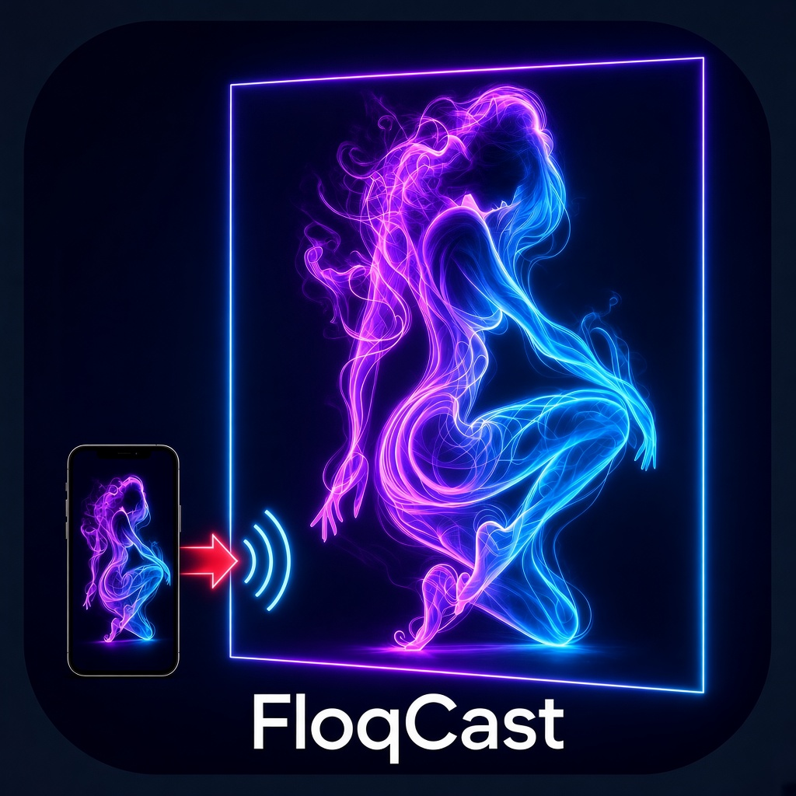
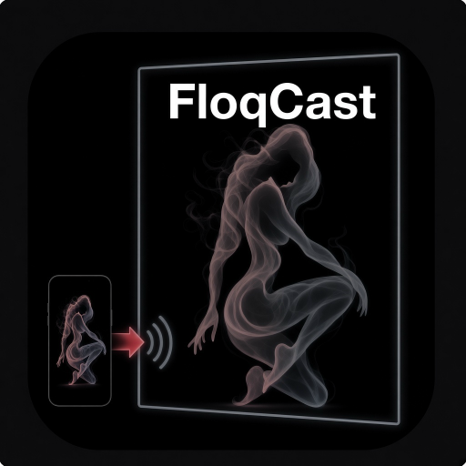
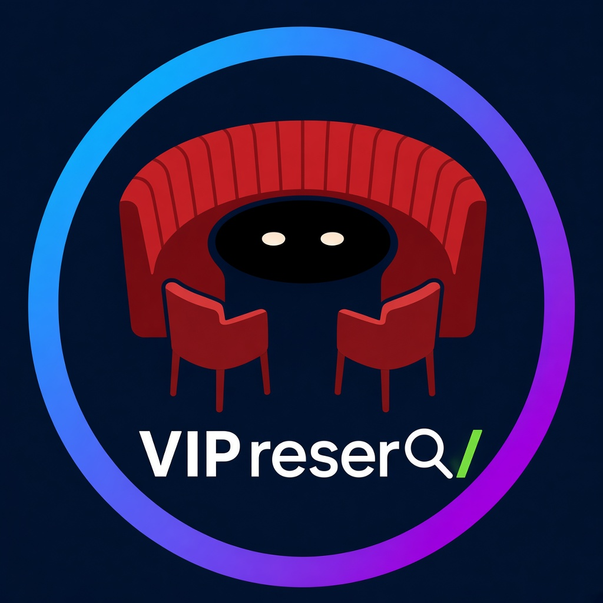

Nightlife scheme current FLOQR
Neon ring/stroke · FloqCast casing · VIP reserV unseparated under furniture · red seat · black table




Same preferred compositions rendered twice: Nightlife (current FLOQR neon) and Traditional (charcoal / white / black outlines). Page chrome toggles so you can preview patron scheme switching.
Neon ring/stroke · FloqCast casing · VIP reserV unseparated under furniture · red seat · black table



Charcoal grey face · black outlines · white text · same layouts


Not shipped. Patron scheme capability would map Nightlife vs Traditional icon packs + chrome tokens
(uiScheme / localStorage) after go-ahead. Reply which pack(s) to keep iterating or ship.